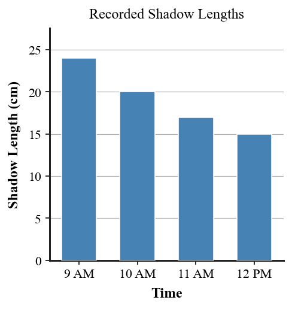

1. A student records, “The shadow is 18 cm long at noon.” Is this statement an observation, an inference, a hypothesis, a scientific law, or a scientific theory? Explain briefly.
2. Name the term for a conclusion built from observations and evidence rather than directly recorded by a measuring tool.
3. State one feature a claim must have in order to be scientifically testable.
4. In scientific usage, which term describes a broad explanation that brings together a large body of well-tested information?
5. A diagram leaves out many real details but preserves the relationships needed to answer a question. Name the scientific tool being described.
6. Use the figure showing shadow lengths recorded at four times. Give one direct observation supported by the figure and one inference that could be investigated with additional evidence.

7. Two students study a scale drawing of the Earth–Moon–Sun system. One says the model is useless because the sizes and distances are not drawn exactly to scale. Explain why a simplified model can still be useful.
8. Claim A: “Released objects near Earth follow a measurable pattern.” Claim B: “An undetectable influence controls every released object but can never be measured.” Which claim is more scientifically useful? Explain your choice using testability.
9. A coin held at arm’s length just covers the Moon. Explain what can be concluded directly from this observation and what cannot be concluded without a model or additional measurements.
10. A formula relates measured angle, distance, and size in a model. Before substituting numbers, list two questions a physicist should ask about the quantities or assumptions in the formula.
11. A classmate says, “The calculation gave a precise number, so the scientific explanation must be correct.” Critique this statement. Use evidence, measurement quality, assumptions, and the role of formulas in your response.
12. Two explanations are proposed for a measured shadow difference. Explanation 1 matches the measurements and predicts what should be seen at another location. Explanation 2 matches the first measurements but makes no prediction that could ever be checked. Decide which explanation is stronger scientifically and defend your choice.
13. Which statement is an observation rather than an inference?
14. Which choice is the best example of an inference?
15. Which claim is most clearly testable?
16. Why must scientific claims be open to evidence that could show them wrong?
17. A model predicts that two measurements should have a constant ratio. Three trials give nearly the same ratio, while a fourth differs greatly. What is the best next step?
18. Which evidence most strongly supports the explanation that a measured pattern is repeatable?
19. Why is a formula best viewed as a guide for thinking in physics?
20. A calculation uses a distance that was estimated poorly. Which statement is most accurate?